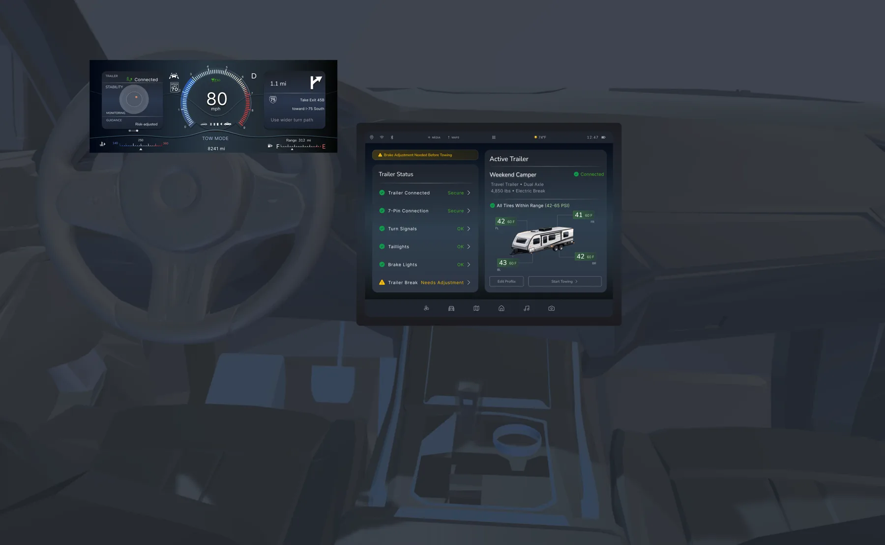

Research
Test the tool, not only the idea.
I built a dental X-ray measurement tool, then ran a blind repeat study to see where its readings held up and where they changed.
90 blinded readings · View Northern ↗UX research · product design · prototyping
I’m a UX researcher and product designer finishing my MS in Design Science at the University of Michigan. I study how people make decisions, design the interface around them, and build working prototypes.

How I work
Research
I built a dental X-ray measurement tool, then ran a blind repeat study to see where its readings held up and where they changed.
90 blinded readings · View Northern ↗
Interface
The Silverado screens change with the driver’s context, while Gear keeps one selected project in focus across linked views.
5 driving contexts · View Silverado ↗
Prototyping
I use HTML, CSS, JavaScript, and Python when behavior is part of the design question. Every public demo uses approved or synthetic material.
5 working browser demos · Explore the work ↓Selected work
Scroll to explore five projectsA truck interface concept designed with Ashita Nichanametla. Scroll into the cab to see the cluster and center display change as a trailer is detected, checked, and towed.
Open case study ↗ Stylized 3D model for illustration only. Screens are the original Figma concept. Detection and assistance are proposed behavior, not deployed capability.
A mobile app for a university fabrication lab: find a machine, book a slot, and finish its safety training before you arrive.
Try the prototype ↗ Case study ↗
A research-led dashboard where priorities, risk, and evidence stay linked to the selected project. Client codes and specifications are masked.
Open case study ↗
90 blinded readings. The averages held steady, and 8 of 45 repeat comparisons still changed stage. This is a research demonstration, not clinical validation.
Open case study ↗
330 synthetic runs you can rotate, filter, and open: which signal moved first, and how long before the outcome.
Open case study ↗All projects
Five projects across automotive, healthcare,
manufacturing, energy, and service design.
Working prototypes
I use HTML, CSS, JavaScript, and Python to turn design decisions into working behavior. These public excerpts power portfolio prototypes; company code and private data stay out.
About
I’m finishing my MS in Design Science at the University of Michigan. I work across UX research and product design, from manufacturing decisions and automotive interfaces to measurement tools and lab preparation.
I build prototypes to clarify the rules behind an idea and to make research testable sooner.
Full-time roles from 2027
Open to relocation
Figma · Python · HTML / CSS / JS
Interviews · Observation · Prototyping
How I work
The information usually exists. It lives in another file, another screen, or someone else’s head. My work connects those fragments to the decision in front of a person.
Interviews, observation, and the files and records people actually use.
Where each piece of information comes from, and what depends on it.
A working prototype, so people react to behavior instead of a static screen.
What the results show, what they don’t, and what is still a hypothesis.
Contact